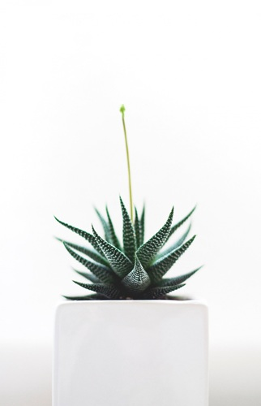

Hawortia, or Zebra Plant, is a gorgeous succulent, and a perfect choice for those who forget to water theri plants! it requires moderate ammounts of light and very little water. Use a special soil for succulents with good drainage. As it waas said before, Hawortia can handle drouts, but overwatering can kill its roots very quickly, so make sure to use a special soil mix for succulents, as well as provide a good drainage and don't overwater it! Despite being a desert plant, Hawortia doesn't like a direct sunlight and prefers a half-shadow. If you put it on a window and it's leaves are turning red, it means the plant is getting burned by the sun. Don't worry though, just put it into the shade, and it'll eventually turn green again.If you're very forgetful, hawortia is your choice. It stores tremendous ammounts of water in its leaves and able to survive in rock-dry soil for weeks, maybe even months. Some people plant hawirtia into clay balls or pebbles, instead of soil. In many cases, it helps the plant to grow longer, stronger roots, and become healthier and bigger!
Back to Main Page